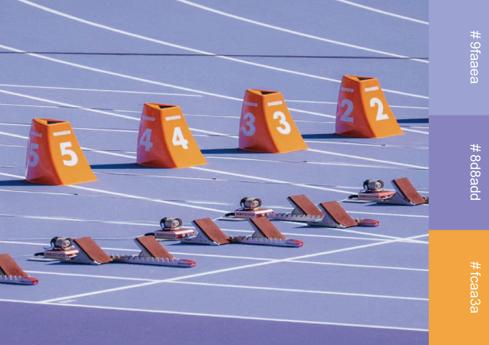
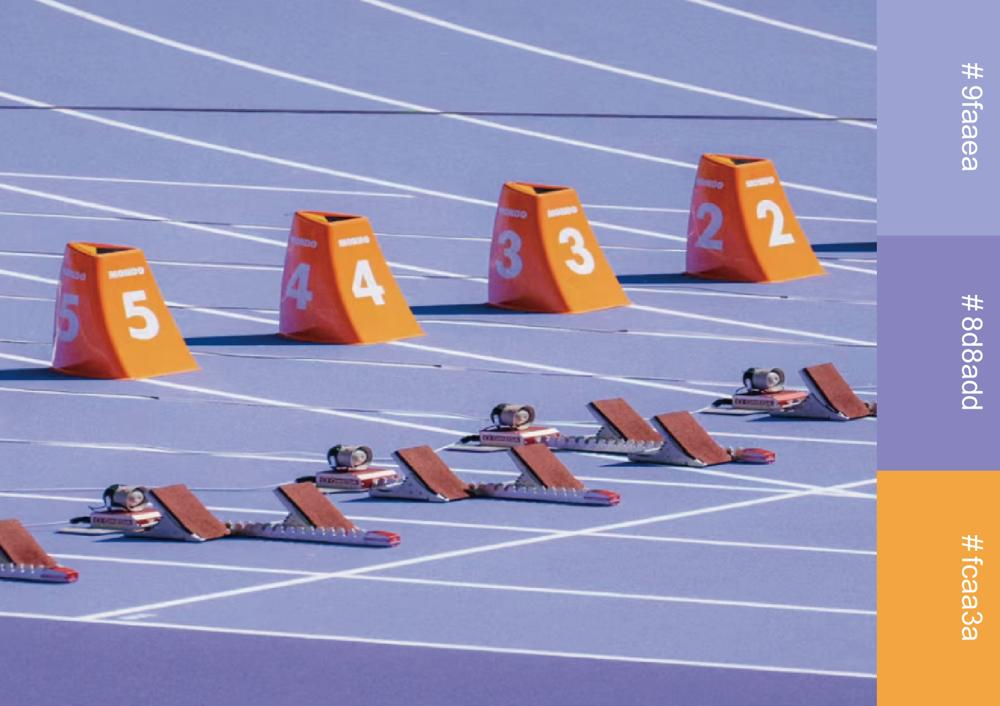

Pata? Pata! Something is happening!
The Tsinghua Philosophy Drama Festival is a campus public art initiative founded by Tsinghua University’s Philosophy Class and Art Education Center. It blends theatrical performance with philosophical reflection, inviting students to explore the world, society, and self through dramatic expression.
As the visual designer for the second edition of the festival, I developed a full visual identity system, including a redesigned logo, dynamic posters, two editorial-style handbooks, and multiple derivative products (badges, tote bags, mugs, etc.). The year's theme — “Pata? Pata! Something is happening!” — inspired a visual language rooted in motion, interruption, and sonic imagination.
In reimagining the festival’s identity, I balanced conceptual clarity with bold visual experimentation, creating a theater of the mind through typography, color, and motion.
The original logo concept was metaphorically rich but visually complex. I simplified the form while preserving symbolic elements — such as the brain and the stage — to ensure clarity, scalability, and recognition across different media.
I explored sound as a visual metaphor, using fragmented composition, kinetic tension, and typographic rhythm to evoke the feeling of interruption and sudden emergence.
 


I explored sound as a visual metaphor, using fragmented composition, kinetic tension, and typographic rhythm to evoke the feeling of interruption and sudden emergence.